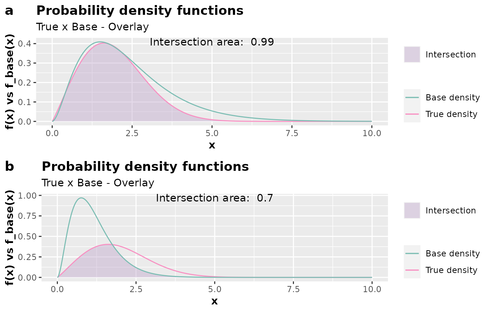
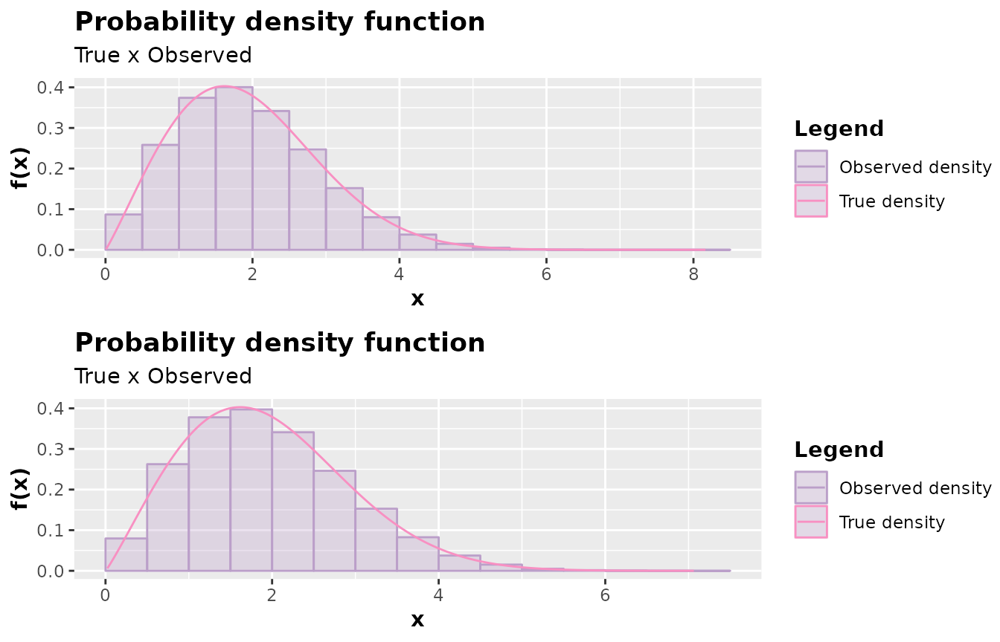

Motivation
Providing a more suitable probability density function can further reduce computational cost and increase the acceptance probability. Therefore, inspecting an alternative for the base probability density function is a good practice.
The accept_reject()
function supports, for the continuous case, specifying
a base probability density function if you don’t want to use the
continuous uniform distribution as the default base.
When choosing to specify another probability density function different from the uniform one, it’s necessary to specify the following arguments:
-
f_base: base probability density function; -
random_base: sampling from the base probability density function; -
args_f_base: list with the parameters of the base density.
By default, all of them are NULL, and the continuous
uniform distribution in xlim is used as the base. If at
least one of these arguments is not specified, no error will occur, and
the continuous uniform distribution in xlim will still be
used as the base.
For the discrete case, if the user mistakenly specifies any of these
arguments, i.e., when continuous = FALSE, the accept_reject()
function will ignore these arguments and use the discrete uniform
distribution as the base.
If you choose to specify a base density, it’s convenient to inspect
it by comparing the base density function with the theoretical
probability density function. The inspect()
function facilitates this task. The inspect()
function will plot the base probability density function and the
theoretical probability density function, find the intersection between
the densities, and display the value of the intersection area on the
plot. These are important pieces of information to decide if the base
probability density function specified in the args_f_base
argument and the value of c (default is 1) are
appropriate.
Example of inspection
library(AcceptReject)
#>
#> Attaching package: 'AcceptReject'
#> The following object is masked from 'package:stats':
#>
#> qqplot
library(cowplot) # install.packages("cowplot")
# Ensuring reproducibility
set.seed(0)
# Inspecting
# Case a
a <- inspect(
f = dweibull,
args_f = list(shape = 2.1, scale = 2.2),
f_base = dgamma,
args_f_base = list(shape = 2.8, rate = 1.2),
xlim = c(0, 10),
c = 1.2
)
# Inspecting
# Case b
b <- inspect(
f = dweibull,
args_f = list(shape = 2.1, scale = 2.2),
f_base = dgamma,
args_f_base = list(shape = 2.9, rate = 2.5),
xlim = c(0, 10),
c = 1.4
)
plot_grid(a, b, nrow = 2L, labels = c("a", "b"))
Notice that considering the distribution in scenario “a” in the code
above is more convenient. Note that the area is approximately 1, the
base probability density function with parameters
shape = 2.8 and rate = 1.2 provides a shape
close to the theoretical distribution, and c = 1.2 ensures
that the base density function upper bounds the theoretical probability
density function. Therefore, considering f_base with \(\Gamma(\alpha = 2.8, \beta = 1.2)\) and
c = 1.2 is a reasonable choice for a base distribution.
Therefore, passing arguments to f_base = dgamma,
args_f_base = list(shape = 2.8, rate = 1.2), and
c = 1.2 to the accept_reject()
function will lead us to an even more efficient code.
library(AcceptReject)
library(tictoc) # install.packages("tictoc")
# Ensuring reproducibility
set.seed(0)
# Não especificando a função densidade de probabilidade base
tic()
case_1 <- accept_reject(
n = 200e3L,
continuous = TRUE,
f = dweibull,
args_f = list(shape = 2.1, scale = 2.2),
xlim = c(0, 10)
)
toc()
#> 0.408 sec elapsed
# Specifying the base probability density function
tic()
case_2 <- accept_reject(
n = 200e3L,
continuous = TRUE,
f = dweibull,
args_f = list(shape = 2.1, scale = 2.2),
f_base = dgamma,
random_base = rgamma,
args_f_base = list(shape = 2.8, rate = 1.2),
xlim = c(0, 10),
c = 1.2
)
toc()
#> 0.151 sec elapsed
# Visualizing the results
p1 <- plot(case_1)
p2 <- plot(case_2)
plot_grid(p1, p2, nrow = 2L)
Notice that the results were very close in a graphical analysis. However, the execution time specifying a convenient base density was lower for a very large sample.
Important:
c that you can pass as an argument to accept_reject().
The idea is to find a small value of c to maximize the
acceptance probability and pass this value to stat_c so
that the accept_reject()
function can improve this value.